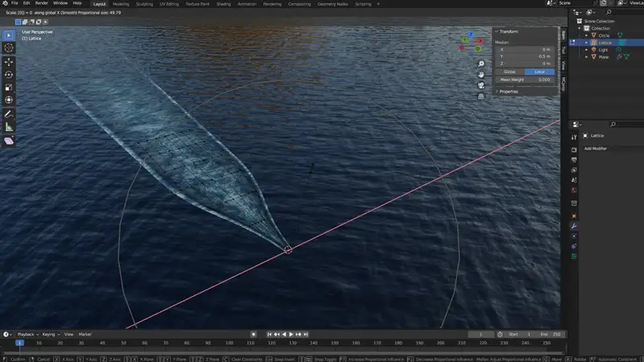

航跡を作りたいと思い、Googleで検索をかけるとさっぱりヒットしません。 Googleのせいかと思い、DuckDuckGoでも検索をかけましたが同じでした（シミュレーションを使用する方法は負荷が大きいので採用できない）。 ほとんど唯一のまともな情報源がこちら。
【Blender 2.82 Tutorial】 泡のつくり方 - How to make the foam with only shaders | mmCGチャンネル animeticですが、もう少しシンプルに作れないかと思いながら、主にテクスチャを動かすのにドライバを使用したり、ノイズの形を妥協すると共に色を強くするなど試行錯誤しました。
その前に当然ですが、すでに海を作っていなければなりません。下の記事で海の作り方を紹介しています。 また、船の進行方向はY負の方向としています。大抵この向きで製作されると思いますが、違うなら最後に平面そのものを回転させて対応してください。 【blender】海洋モディファイア（Ocean Modifier）を用いた海（動画向け）- nnz-blog
概念の説明
平面をひとつ作成し、そこに航跡っぽいテクスチャをあてます。模様にはノイズテクスチャを使用します。 船の船首に形を合わせるのにラティスを使います。
航跡はいくつかの要素がありますが、今回は波の表現はあきらめ、船首が作る泡とプロペラが作る泡を平面上に表現します。白い泡の周辺で海水が緑っぽくなるのも再現します。
泡の変化はノイズテクスチャのZ軸を動かす事で表現し、船が動いた後泡がその場にとどまるのをテクスチャ座標をドライバによって動かすことで表現します。
本題
はじめにNode Wranglerを有効化
Node Wranglerはノードエディターの操作性を向上させる公式アドオンです。
今回はNodeを沢山繋ぎますので、設定からNode Wranglerを有効にしておくといいです。操作方法は専門の記事に譲りますが、今回使うのはCtrl+Tと, Ctrl+Alt+右ドラッグでMix Colorノードを追加する操作です。
平面の作成
平面を追加します。Sizeは船の幅に合わせて設定しますが、今回は25 m にしました。
{kind=link}
平面を細長くします。Nキーでサイドバーを開き、Item > Dimensions > Y=500 m と入力します。Ctrl+AでApplyメニューを開き、Scale を選択してスケールを適用しておきます。
{kind=link}
船が世界の中心に配置されると考え、航跡の位置を調節します。編集モードに入り、Aで全選択してから、 G→Yと入力しマウスを動かして船のへさきの位置に合わせるように調節します。 G Yと入力した後続けて250と入力すると、ちょうどオブジェクトの中心を表すオレンジの点が先頭となる位置になります。
{kind=link}
航跡を船から離れるほど広がっていくような台形にします。左クリックでドラッグし、船尾側の二つの頂点を選択します。続けてSキーを押してからマウスをドラッグすると幅を調節できます。
{kind=link}
へさきの付近は細かく形を調節しなければいけませんのでSubdivision Surfaceを掛けるのですが、その細かさをへさきに集中させるためにループカットを追加します。 Ctrl+Rを押してから平面の長辺の上付近にマウスカーソルを置くと、真ん中あたりに明るい黄色のプレビューが出るのでクリックします。 続けてマウスを動かしてループカットの位置を船尾あたりに調節します。いま船が無い場合はだいたい前5分の1くらいの位置にします。

最後に、平面が海と重なってちらつくので、オブジェクトモードに戻り、Z=0.1 m くらいに浮かせて置きます。
{kind=link}
テクスチャの作成
シェーダーを組んでいきますので、画面上部のShadingタブに移動しておいてください。右上の球体が4つ並んでいるところの、右端か、その隣を選択しておいてください。
平面を選択した状態で、ノードエディターの+Newをクリックし、新しいマテリアルを作成します。名前は適当に変更しておいてください。（Material_Wakeにしておきました。）
下の画像を参考にノードを組んでください。ノイズテクスチャに繋がっているMappingノードの Location Y, Zが紫色になっていますが、ここにはあとでドライバを設定しますので入力しないでください。
カラーランプノードの使い方： 点を選択してから下の箱をクリックすると色を変えられます。点を選択して-をクリックすると点を削除、+をクリックすると追加できます。

ドライバで模様を動かす
先ほど紫になっていたMappingノードの、Location Zのところをダブルクリックし、#frame/480と入力します。Layoutタブに戻って再生すると模様が変化します。
続いて同じノードのLocation Yを右クリックしAdd Driverをクリック、出現したメニューのスポイトマークをクリックしてから平面自身を選択します。また、上の計算式の入力フィードに、「var」と表示されていますので、これを「var / 25」に変更します。
{kind=link}
平面を選択し、G Yで前後に動かすと模様がその場にとどまっているのがわかります。
船首の形に合わせて変形させる
変形にはラティスを使用します。Layoutタブに戻り、オブジェクトモードにして画面上でShift+Aからラティスを追加します。

Nキーでサイドバーを開き、Item > Dimensions: X=25 m / Y=100 mにしておおよその大きさを調節しておきます。また、画面右下Object Data Properties（緑のラティスのタブ）の Resolutionを U=7 V=7 W=1にします。
{kind=link}
G Yで前後に動かし、ラティス先頭に平面の先頭が入るように位置を調節します。
{kind=link}
ここからは、ラティスを変形させると平面が一緒に変形するように設定していきます。まず平面に再分割モディファイアを追加します。
平面を選択し、画面右下Modifier Properties（スパナのタブ） > Add Modifier > Generate > Subdivision Surfaceをクリック。 続けてラティスモディファイアを追加します。Add Modifier > Deform > Latticeをクリック
モディファイアを以下のように設定します
- Subdivision Surface > Type: Simple
- Subdivision Surface > Levels Viewport= 4 / Render= 4
- Lattice > Object: スポイトマークをクリックして追加したラティスを選択。
{kind=link}
終わったらラティスを変形させてみましょう。
もう一度ラティスを選択して、編集モードに入ります。画面上中央の二重丸マーク（Proportional編集）を有効にし、ラティスの前二列を選択した状態でS →X →0と入力し、マウスホイールを転がすとすぼみ具合を調節できると思います。
{kind=link}
{kind=link}
もし船に合わせて幅を変えるなら、Aでラティスのすべての点を選択し、S Xと入力してドラッグします。
へさきの波が一点に集まっていないのが気になるなら、平面を選択し、Subdivision Surface > Type: Catmull-Clark、UV Smooth: Keep Corners とすれば治ります。
ペアレントを設定する
このままでは、平面を動かしたときにラティスがおいていかれてしまうので、ペアレントを設定して連動するようにします。
ラティスは3Dビューの中では選択しづらいので、アウトライナー上でラティス→平面の順にCtrl+クリックで選択します。平面が明るい黄色で表示されているのを確認してCtrl+Pを押すとメニューが表示されるのでObjectを選択します。
{kind=link}
すると、平面の動きにラティスが追従します。ラティスの方を動かさないでください。
アニメーションとレンダリング
背景の設定方法とカメラの設定方法は海の作り方の記事で紹介しましたので、ここでは割愛します。↓
【blender】海洋モディファイア（Ocean Modifier）を用いた海（動画向け）- nnz-blog船を動かす
船を用意してください。船をマインクラフトからBlenderに取り込む方法はこちらの記事で解説しています。 【blender】マインクラフトの作品をblenderで撮影する手順【eevee篇】
船を取り込んだら、波の先端の位置に船のへさきを合わせて設置してください。
船に航跡を追従させるために再びペアレントを設定します。平面→船の順にCtrl+クリックで選択し、Ctrl+P > Objectで設定します。
船の動きはキーフレームで作ります。10 m/s で 20 knotくらいですので、このスピードで動かしてみます。タイムライン上で現在位置を0フレーム目にし、船を選択した状態でLocation Yにキーフレームを打ちます。 続けて、240フレーム目に移動し、Location Yの現在値に続けて-100と入力してキーフレームを打ちます。
{kind=link}
このままだとゆっくり動き出してしまいますので、タイムラインを右クリックして、Interpolation Mode > Linearを選択しておきます。
そして書き出した動画がこちら。